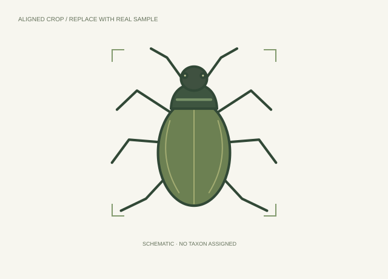
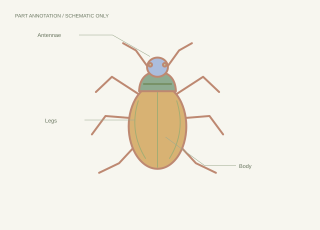
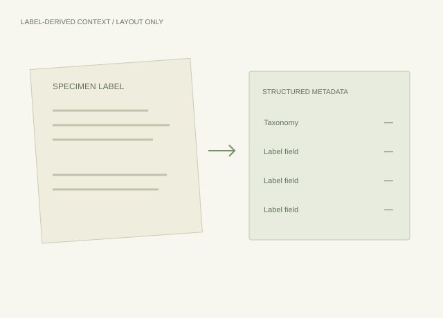

On this page
Data Structure
The official release directory structure has not been verified. Replace this note with the published dataset tree and file descriptions.
Dataset overview
InSpect contains digitized specimen images, aligned crops, hierarchical taxonomy and label-derived structured metadata, with fine-grained anatomical part annotations for a subset of images.
| Statistic | Value |
|---|---|
| Digitized specimen images | 48,184 |
| Images with anatomical part masks | 1,859 |
| Benchmark settings | 2 |
| Taxonomic coverage and class counts | To be supplied |
| Training / validation / test splits | To be supplied |
| Image resolution, release size and formats | To be supplied |
Citation
If you use InSpect in your research, please cite the paper.
Provisional BibTeX; replace with the official export when available.
@misc{zhang2026inspect,
title = {InSpect: A Curated Natural History Collection Dataset
for Insect Specimen Understanding},
author = {Zhang, Junhao and Xu, Feng and Ravendran, Ahalya
and Fisher, Nicole and Tidd, Brendan
and Petersson, Lars and Wang, Dadong and Li, Xun},
year = {2026},
note = {NeurIPS 2026; provisional metadata},
url = {https://openreview.net/forum?id=51J0UrBZZy}
}InSpect Overview

Annotations
Specimen images and aligned crops

Cropped images support visual taxonomic recognition, either alone or alongside label-derived metadata.
Fine-grained anatomical part masks

The annotated subset contains 1,859 images. Structures described in the abstract include antennae, legs, wings and body regions.
Label-derived metadata

Tools
Dataset download: official link awaiting confirmation. Release version, file sizes and download instructions will be added here.
Code repository: link awaiting confirmation.
The official code repository, preprocessing instructions and evaluation scripts are awaiting confirmation. Resource links can be added when the authors provide them.
Copyright:
Our dataset follows the copyright Creative Commons BY-NC-ND 4.0 license.